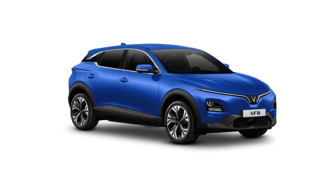

New model
With a sophisticated design rarely seen in compact SUVs and a spacious, modern interior with a 12.9-inch touchscreen display and connectivity, the VinFast VF 6 is among the most technologically advanced subcompact eSUV in its class.
The futuristic exterior is highlighted by signature front and rear light bar with LED effects, Sleek body panels, bold a-wing front apron and aggressive rear design styling.
The VF 6 comes packed with Advanced driver assistance systems including Highway assist (level 2), Lane centering assist, Adaptive cruise control, Emergency lane keep assist.
The front-wheel drive VF 6 packs up to 201 hp and 228 Ib-ft. of torque and with access to more than 90% coverage of public chargers throughout North America, the VF 6 is ready to take on any adventure with style. Check out our charging solutions with Level 2 AC and Level 3 DC fast charging.